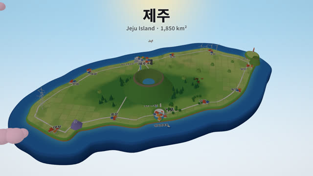
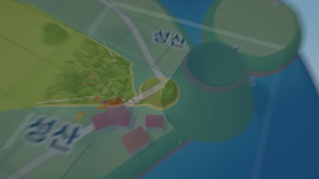
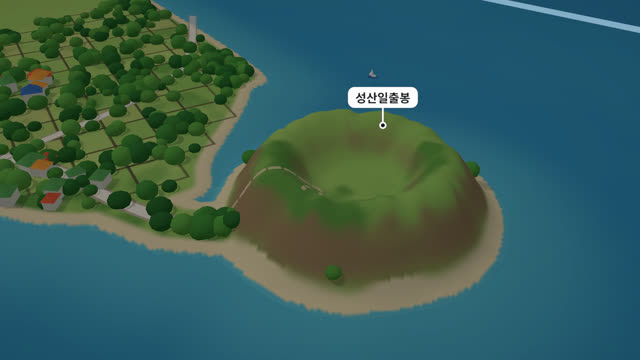
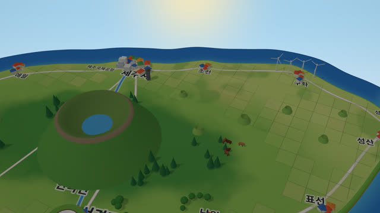
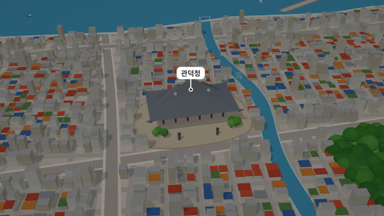
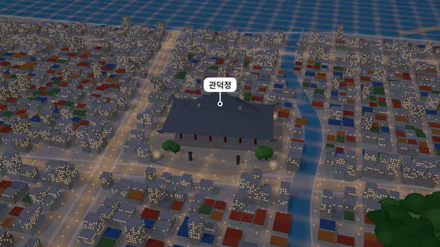
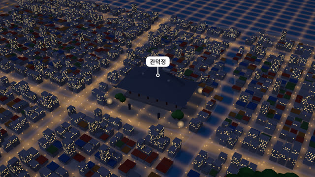
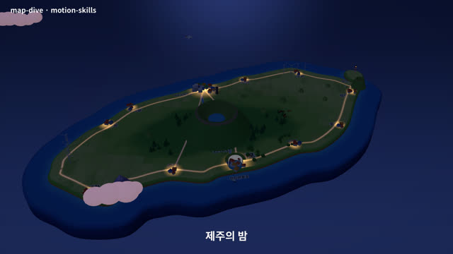
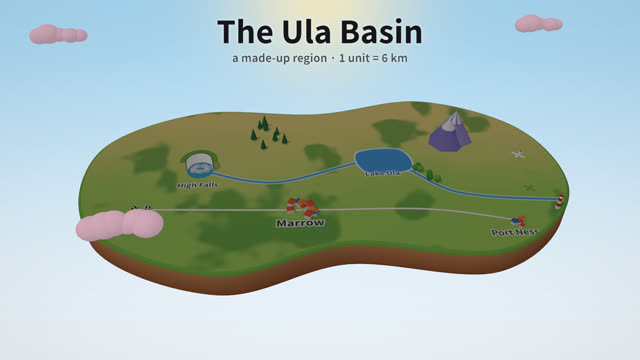

작업 흐름
- 입력
- 장소 하나(나라, 주, 섬, 도시, 캠퍼스, 가상의 땅)와 보여 줄 명소
- 브리프
- 지도에서 딴 경위도 윤곽, 땅의 색 흐름, 강 · 길 · 지명, 장난감 랜드마크, 다이브할 1–3곳의 축척과 내용, 시간표, 모든 글자
- 장면
- 흙 단면이 보이는 떠 있는 지도, 높이 함수로 그린 해안 · 계곡, 거리 격자와 건물이 있는 도시, 같은 방향 줌과 크로스페이드로 잇는 다이브, 밤의 도로 불빛과 창문
- 확인
- 절반 크기 스틸, 전환 구간 콘택트 시트, 글꼴 · 결정성 · 빈 프레임 · 라벨 위치 · 장면 규칙 검사, 검토 기준 채점
- 출력
- 30fps 1920×1080 MP4(장면 신호로 만든 음악 포함), 끌어서 시간을 감아 보는 라이브 페이지
cd map-dive/examples/jeju
node ../../scripts/render.mjs index.html --stills 2,9,19.5 --scale .5
node ../../scripts/check.mjs index.html
node ../../scripts/score.mjs index.html
node ../../scripts/render.mjs index.html --workers 4 --audio out/score.wav
node ../../scripts/new-film.mjs ../../../my-place요구 사항: Node + Playwright Chromium(WebGL2), ffmpeg, 글꼴을 받을 때 한 번의 네트워크. GPU가 없으면 1080p 한 프레임에 약 2초가 걸려 30초 영상을 백그라운드로 30분쯤에 렌더합니다. 단계별 순서는 SKILL.md에 있습니다.
샘플
원본 영상에 없던 주제인 제주도로 만든 예제 「제주」의 장면들과 시작 템플릿입니다. 카드를 누르면 새 탭에서 그 장면이 그 순간에 멈춘 채 열리고, 브라우저가 직접 그립니다.
제주 16:9 · 30초
떠 있는 제주 섬에서 성산일출봉으로 다이브했다가 떠올라, 관덕정이 있는 원도심으로 내려가 밤을 맞고 밤의 섬으로 돌아갑니다.

지도 · 2초떠 있는 섬
바다 판 위에 선 섬, 지도에 누운 지명, 한라산 · 성산일출봉 · 산방산 · 천지연폭포 미니어처

다이브 · 6.2초지도 속으로
같은 방향으로 줌하는 두 장면을 0.6초 크로스페이드와 줌 블러로 이음

근접 · 9초성산일출봉
높이 함수로 깎은 분화구와 절벽, 경사가 급하면 바위색, 돌담 밭 조각과 3D 수관

지도 · 14.5초다시 섬 위로
떠오른 뒤 북쪽 해안을 따라 제주시로. 작은 오름들, 중산간의 말, 동쪽 풍력발전기

근접 · 19.5초관덕정과 원도심
8° 기운 거리 격자, 큰길 옆이 더 높은 건물, 산지천과 항구, 경계 없이 이어지는 먼 도시

밤 · 21.6초해 질 녘
장면의 밤 값이 0에서 1로. 빛과 하늘이 바뀌고 도로 · 가로등 · 창문이 함께 켜짐

밤 · 23.8초밤의 도시
도로 빛 레이어, 셰이더로 켜는 창문, 가로등 점, 바깥 도시에 칠한 불빛

밤 · 28초밤의 섬
디졸브로 돌아온 섬. 낮에 칠해 둔 도로와 마을 불빛이 밤에만 빛남

템플릿 · 14초시작 템플릿templates/film.html
바다 없는 내륙 지역이라 흙 단면이 사방으로 보임. 폭포 계곡으로 다이브했다 돌아옴
실제 작품
이 레포에서 만든 스킬입니다. Bruno César가 #30DayMapChallenge로 올린 파라나주 3D 지도 영상에서 형식(떠 있는 장난감 지도, 지도에 누운 지명, 랜드마크 미니어처, 축척을 넘나드는 다이브, 도시에 내리는 밤)만 빌렸고, 코드와 소품, 제주 예제의 장소와 구성은 모두 이 레포의 것입니다.
링크
- SKILL.md 워크플로
- 폴더 lib · scripts · templates · references · examples
- README.md 빠른 시작
- references/BRIEF.md 장소에서 브리프로, 고정되는 것과 장소마다 설계하는 것, 검토 기준
- references/LOOK.md 장난감 지도로 보이게 하는 수치, 빛, 근접 장면, 움직임
- references/KIT.md 엔진 · 땅 · 소품 API, 새 소품 만들기
- references/LESSONS.md 겪은 문제와 해결